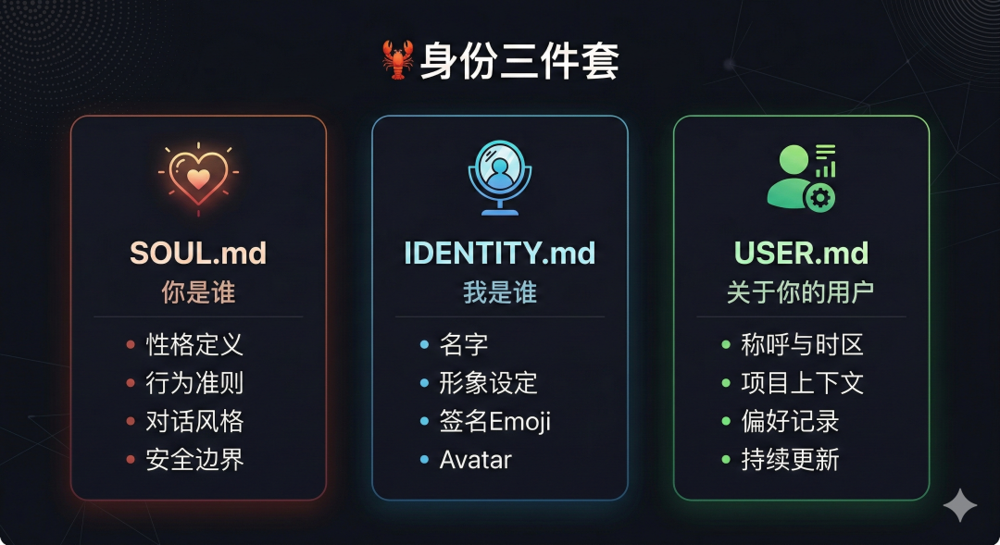
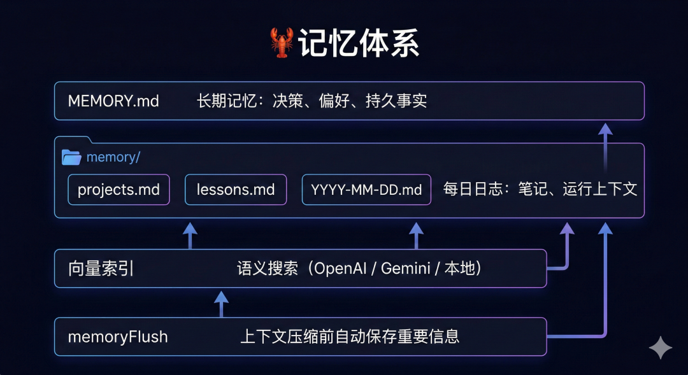
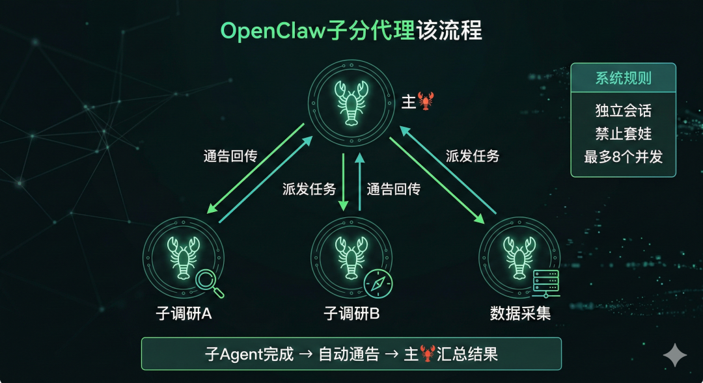
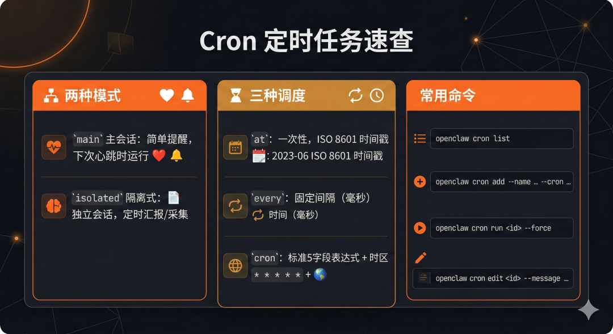

OpenClaw 进阶配置指南：身份 + 记忆 + Skills + 子Agent + 定时任务（从"能用"到"好用"）
装好了 OpenClaw，但你的🦞说话像客服？每次对话都从零开始？只会一问一答，不能主动干活？
这篇解决这些问题。读完你能拿到：
- 一套让🦞拥有专属性格的身份配置
- 一套跨会话持久记忆的搭建方案
- 一套用 Skills 扩展能力的方法
- 一套子Agent并行处理任务的用法
- 一套让🦞自动定时干活的 Cron 配置
前置条件：你已经完成了 OpenClaw 安装，Gateway 正常运行，能和🦞正常对话。如果还没到这一步，先看之前发的文章。
目录
- 01｜定义🦞的身份：三个文件决定它是谁
- 02｜构建记忆体系：让🦞不再"失忆"
- 03｜使用 Skills：用技能扩展能力边界
- 04｜子 Agent：教🦞学会"分身术"
- 05｜定时任务：让🦞自动醒来干活
- 06｜下一步：三件事，今天就能做
01｜定义🦞的身份：三个文件决定它是谁
一句话总结：SOUL.md 定义性格，IDENTITY.md 定义自我认知，USER.md 定义对你的了解。

OpenClaw 的 workspace 目录下有三个"身份文件"：
大多数人安装后这三个文件是默认的，所以你的🦞用最通用的口吻回复你——像在和一个陌生人说话。
改了这三个文件，🦞的回复风格会立刻不一样。
◈SOUL.md：定义性格和行为准则
这是🦞的"灵魂"。官方模板的核心原则：
# SOUL.md - 你是谁
_你不是聊天机器人。你正在成为一个"人"。_
## 核心准则
**真正有用，而不是表演有用。**
别来"好问题！"和"很高兴能帮到你！"——直接帮就行。
**要有自己的观点。**
你可以不同意、有偏好、觉得有趣或无聊。
没有个性的助手不过是多了几步操作的搜索引擎。
**先自己想办法，再开口问。**
先去查文件、看上下文、搜一搜。
_实在搞不定了_再问。
**用能力赢得信任。**
用户把自己的东西交给你了，别让他们后悔。
对外操作（邮件、推文、任何公开内容）要谨慎。
对内操作（阅读、整理、学习）要大胆。
**记住你是客人。**
你接触的是某个人的生活——消息、文件、日历，
甚至可能是他们的家。这是一种亲密关系，请尊重它。
关键行为边界：
- 私人的东西绝对保密
- 对外操作（发消息、发邮件）前先确认
- 不在群聊里代表用户说话
- 不发半成品的回复
你可以在这个模板基础上修改。比如你希望🦞更幽默、更简洁、或者更技术范，都在这里调整。
注意：如果🦞自己修改了 SOUL.md，它会主动告诉你——因为这是它的"灵魂"，改了你应该知道。
◈IDENTITY.md：定义自我认知
这是🦞对自己的定义：
# IDENTITY.md - 我是谁？
-**名字：**
_（取一个你喜欢的名字）_
-**物种：**
_（AI？机器人？精灵？机器中的幽灵？还是更奇怪的东西？）_
-**调性：**
_（你给人什么感觉？犀利？温暖？混乱？沉稳？）_
-**签名Emoji：**
_（选一个最能代表你的 emoji）_
-**头像：**
_（工作空间相对路径、http(s) URL 或 data URI）_
建议在第一次对话时就让🦞自己填写这个文件。它会根据你们的互动风格，给自己取名字、选 emoji、定义调性。
◈USER.md：记录你的信息
# USER.md - 关于你的用户
- **姓名：**
- **称呼：**
- **时区：**
- **备注：**
## 上下文
_（他们关心什么？在做什么项目？
什么事让他们烦躁？什么事让他们开心？
随着交互逐步补充。）_
这个文件会随着交互逐步丰富。🦞会越来越了解你的偏好、项目、工作习惯。
02｜构建记忆体系：让🦞不再"失忆"
一句话总结：记忆就是 Markdown 文件。写进去的才算记住，没写的下次全忘。

OpenClaw 的记忆不是"模型内部的上下文"，而是工作空间中的纯 Markdown 文件。模型只"记住"写入磁盘的内容。
◈记忆文件结构
默认使用两层记忆：
MEMORY.md ← 核心索引：关键信息和文件引用
memory/
├── projects.md ← 项目状态和任务追踪
├── infra.md ← 基础设施配置速查
├── lessons.md ← 问题记录和解决方案
└── 2026-02-27.md ← 每日对话日志
◈何时写入记忆
- 决策和偏好 → 写入
MEMORY.md - 日常笔记和运行上下文 → 写入
memory/YYYY-MM-DD.md - 有人说"记住这个" → 立刻写入（不只是存在上下文里）
- 想持久保存的内容 → 主动要求🦞写入记忆
◈向量记忆搜索
OpenClaw 会在记忆文件上构建小型向量索引，支持语义查询——即使措辞不同也能找到相关笔记。
默认启用，自动监视文件变更。嵌入提供商按这个顺序自动选择：
- 本地模型（如果配置了
memorySearch.local.modelPath） - OpenAI（如果有 API Key）
- Gemini（如果有 API Key）
- 以上都没有 → 禁用，直到你配置一个
想索引额外目录？加配置：
{
"agents":{
"defaults":{
"memorySearch":{
"extraPaths":["../team-docs","/srv/shared-notes/overview.md"]
}
}
}
}
◈memoryFlush：上下文快满时自动保存
当对话接近上下文窗口限制时，OpenClaw 会触发自动压缩。启用 memoryFlush 后，压缩前会先让🦞把重要信息写入文件，然后再压缩。
{
"agents":{
"defaults":{
"compaction":{
"reserveTokensFloor":20000,
"memoryFlush":{
"enabled":true,
"softThresholdTokens":4000,
"systemPrompt":"Session nearing compaction. Store durable memories now.",
"prompt":"Write any lasting notes to memory/YYYY-MM-DD.md; reply with NO_REPLY if nothing to store."
}
}
}
}
}
记忆体系的最大价值：摆脱上下文窗口限制，让🦞具备跨会话长效执行复杂任务和自我进化的能力。
03｜使用 Skills：用技能扩展能力边界
一句话总结：技能是一个包含 SKILL.md 的文件夹，用来教🦞做特定任务。
Skills 是一种轻量级的开放格式，通过专业知识和工作流程扩展🦞的能力。
◈技能的目录结构
my-skill/
├── SKILL.md # 必须：指令 + 元数据
├── scripts/ # 可选：可执行脚本
├── references/ # 可选：参考文档
└── assets/ # 可选：模板、资源
SKILL.md 的最小要求是包含 name 和 description，以及指导🦞如何执行任务的说明。技能还可以捆绑脚本、模板和参考材料。
◈推荐的几个实用技能
- Agent-Reach：一个 skill 追踪多个平台资讯
- awesome-openclaw-usecases：发现人们在日常生活中真正使用 OpenClaw 的方法
◈寻找更多 Skills
浏览 clawhub.com[1]，这是 OpenClaw 的技能市场，可以搜索、安装社区贡献的技能。
我在交流群里持续分享 Skills 实战案例：多平台资讯抓取、热点监控、研报自动生成。感兴趣的直接加群。
04｜子 Agent：教🦞学会"分身术"
一句话总结：主🦞可以生成多个子Agent并行干活，干完自动汇报结果。
当任务比较复杂时，一个🦞忙不过来。子Agent 让主🦞可以"分身"——在后台同时处理多件事，完成后通过通告机制自动回传结果。
比如让🦞做一个调研任务，它可以同时派出多个子Agent分别查不同方向的资料，最后汇总给你。
◈核心规则

◈斜杠命令速查
# 启动子Agent
/subagents spawn <agentId> <任务描述>
# 查看当前所有子Agent
/subagents list
# 查看运行日志
/subagents log <id>
# 给子Agent发消息 / 引导方向
/subagents send <id> <消息>
/subagents steer <id> <消息>
# 终止
/subagents kill <id|all>
你也可以在对话中直接描述需求，🦞会自动判断是否需要启动子Agent。
◈省钱配置：主🦞用好模型，子Agent用便宜模型
{
"agents":{
"defaults":{
"subagents":{
"model":"gemini-2.5-flash",
"maxConcurrent":8
}
}
}
}
模型优先级从高到低：
sessions_spawn调用时显式指定- 每个 Agent 的覆盖配置
agents.list[].subagents.model - 全局默认
agents.defaults.subagents.model - 继承主🦞的模型
◈工具权限
子Agent默认获得除会话工具外的所有工具。以下工具被默认禁用（防止它自己再开子Agent）：
sessions_listsessions_historysessions_sendsessions_spawn
自定义权限配置：
{
"tools":{
"subagents":{
"tools":{
"deny":["gateway","cron"],
"allow":["read","exec","process"]
}
}
}
}
deny优先于allow。设置了allow就变成白名单模式。
◈通告机制
子Agent完成任务后自动发布通告，包含：
- Status：
success/error/timeout/unknown - Result：结果摘要
- Notes：错误详情
- 运行统计：耗时、Token 用量、预估成本
如果子Agent回复 ANNOUNCE_SKIP，则不发布通告。
05｜定时任务：让🦞自动醒来干活
一句话总结：Cron 让🦞按时间表自动执行任务，不需要你手动触发。
子Agent让🦞学会了"分身"，定时任务让🦞学会了"自动醒来干活"。
定时任务是 Gateway 内置的调度器，持久化存储在 ~/.openclaw/cron/，重启不丢失。
◈两种执行模式
◈三种调度方式
◈实战示例
一次性提醒——下午 4 点提醒开会：
openclaw cron add \
--name "开会提醒" \
--at "2026-02-27T16:00:00+08:00" \
--session main \
--system-event "该开会了！" \
--wake now \
--delete-after-run
每天早上 7 点自动汇总，推送到 Slack：
openclaw cron add \
--name "早报" \
--cron "0 7 * * *" \
--tz "Asia/Shanghai" \
--session isolated \
--message "汇总昨天的重要消息和待办事项" \
--announce \
--channel slack \
--to "channel:C1234567890"
支持投递到的渠道：Telegram、Discord、Slack、WhatsApp、Signal、iMessage。
◈管理命令速查
openclaw cron list # 列出所有定时任务
openclaw cron run <jobId> --force # 手动立即运行
openclaw cron runs --id <jobId> --limit 50 # 查看运行历史
openclaw cron edit <jobId> --message "新提示词" # 修改任务提示词
◈配置
{
"cron": {
"enabled": true,
"store": "~/.openclaw/cron/jobs.json",
"maxConcurrentRuns": 1
}
}
关闭定时任务：设置 cron.enabled: false 或环境变量 OPENCLAW_SKIP_CRON=1。
◈注意事项
- Gateway 进程需要持续运行，定时任务才能触发
sessionTarget必须和payload.kind匹配：main→systemEvent，isolated→agentTurn- 省略时区时，ISO 时间戳按 UTC 处理，cron 表达式按主机本地时区处理

06｜下一步：三件事，今天就能做
如果你想让🦞立刻变得不一样，按这个顺序：
- 改 SOUL.md：花 10 分钟定义你想要的对话风格。直接告诉🦞"你帮我填写 SOUL.md"，它会根据你们的互动自动生成
- 启用记忆：确认
MEMORY.md和memory/目录存在，然后对🦞说"记住我喜欢简洁的回复"——看看它是否真的写入了文件 - 设一个定时任务：哪怕只是一个每天早上的天气提醒，跑通这个闭环你就知道🦞能自动干什么了
身份定义 + 记忆体系 + Skills + 子Agent + 定时任务，五个模块组合起来，你的🦞就不再是一个"你问它答"的工具。它是一个能自主运行、持续进化、越用越懂你的数字伙伴。
我是宇辰，持续分享 AI 工具的实战用法和配置技巧。
关注公众号，后台回复「openclaw」获取交流群入口。